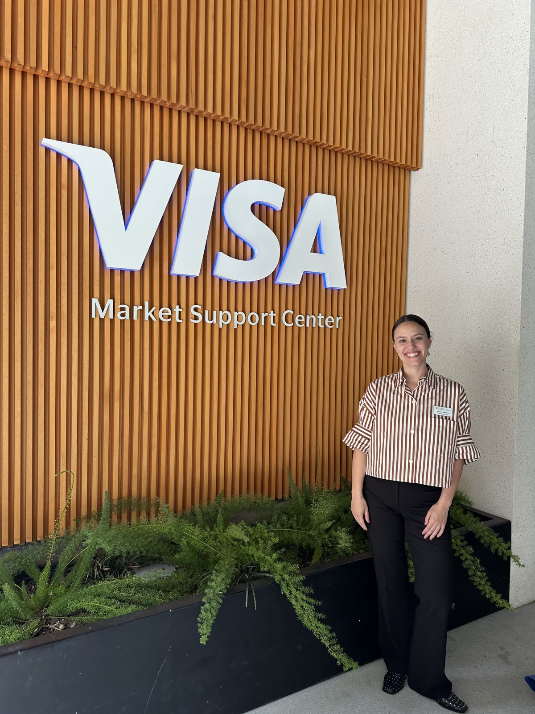
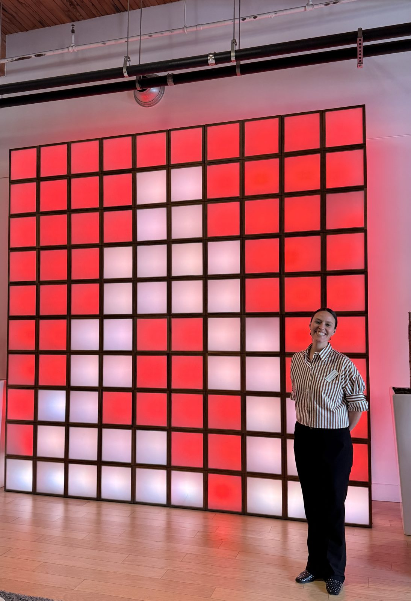
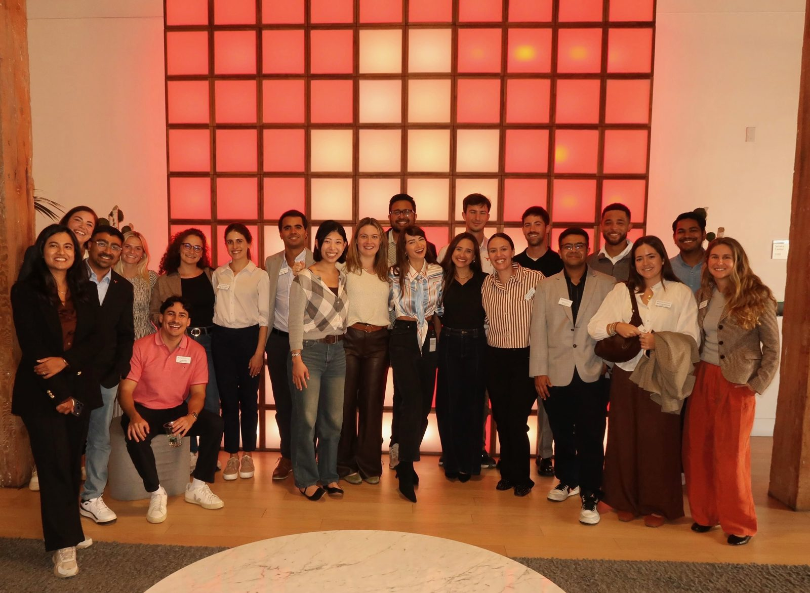

I expected to spend two days learning about tech companies. I came back having learned more about how to think like a marketer inside one.
In September I joined the McCombs Tech Trek: two days of sessions with teams at Adobe, Visa, and Google, an AI startup founder, and the Quantum in Business Conference (QIB).
One company, two kinds of marketing
I'd assumed a company picks one growth strategy and everyone rows in the same direction. Then we heard how a single portfolio can be racing to grow monthly active users (MAU) while still protecting annual recurring revenue (ARR). The first goal is won by removing friction everywhere: easy onboarding, broad reach, convert later. The second is won by serving the people who already value the product most. Now when I look at a launch, the first thing I ask is which of those two games it's playing.
What they said about AI and interviews
One speaker told us interviews are moving toward "show me what you built," and that the people getting ahead keep pushing AI one step past what it does by default. In another session, the advice was to stay in the driver's seat and check everything AI gives you. Both are part of why I built this website with AI.
Thirty minutes with a CFO
One panel said the skill they value most is being able to brief a senior leader, like a CFO, in thirty minutes. That stuck with me because it's the hardest part of research work: choosing what to leave out so the recommendation is easy to act on.
An AI founder on planning for failure
An AI founder said most builders are optimists, and it shows: products get designed for the ideal customer on the ideal day. Real customers are messier. Their answer was to think about how something fails before celebrating how it works, a mindset they traced to Andy Grove's Only the Paranoid Survive. Marketing plans can fall into the same trap when they're built around the ideal customer.
What recruiters actually notice
Recruiters said they can tell quickly who is genuinely interested. The habits they described were practical: read the latest quarterly report and use AI to decode the confusing parts, compare where a company is hiring with where it's investing, watch a demo before talking about a product, and ask alumni for fifteen minutes. Most will say yes, and some know about roles that aren't posted yet.
As someone switching careers myself, I liked hearing how many panelists had started out in journalism, teaching, or public accounting.



Thank you to every speaker who shared their time and honesty, and to the McCombs community that made the trek happen.